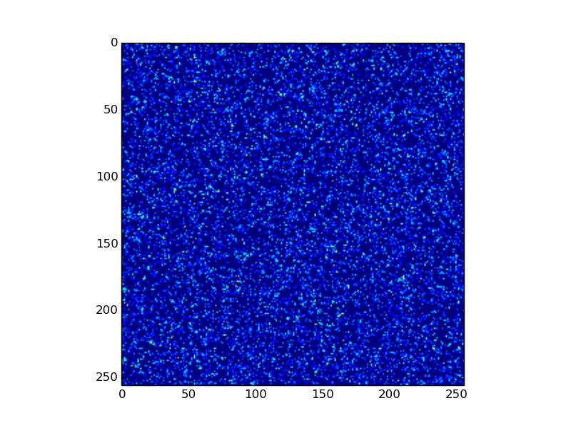
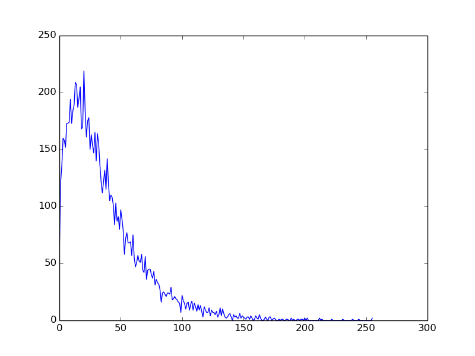

Tutorials¶
In this section we are going through a few use cases for pyDive. If you want to test the code you can download
the sample hdf5-file.
It has the following dataset structure:
$ h5ls -r sample.h5
/ Group
/fields Group
/fields/fieldB Group
/fields/fieldB/z Dataset {256, 256}
/fields/fieldE Group
/fields/fieldE/x Dataset {256, 256}
/fields/fieldE/y Dataset {256, 256}
/particles Group
/particles/cellidx Group
/particles/cellidx/x Dataset {10000}
/particles/cellidx/y Dataset {10000}
/particles/pos Group
/particles/pos/x Dataset {10000}
/particles/pos/y Dataset {10000}
/particles/vel Group
/particles/vel/x Dataset {10000}
/particles/vel/y Dataset {10000}
/particles/vel/z Dataset {10000}
After launching the cluster (Setup an IPython.parallel cluster configuration) the first step is to initialize pyDive:
import pyDive
pyDive.init()
Load a single dataset:
h5fieldB_z = pyDive.h5.open("sample.h5", "/fields/fieldB/z", distaxes='all')
assert type(h5fieldB_z) is pyDive.h5.h5_ndarray
h5fieldB_z just holds a dataset handle. To read out data into memory call load():
fieldB_z = h5fieldB_z.load()
assert type(fieldB_z) is pyDive.ndarray
This loads the entire dataset into the main memory of all engines. The array elements are distributed along all axes.
We can also load a hdf5-group:
h5fieldE = pyDive.h5.open("sample.h5", "/fields/fieldE", distaxes='all')
fieldE = h5fieldE.load()
h5fieldE and fieldE are some so called “virtual array-of-structures”, see: pyDive.structered.
>>> print h5fieldE
VirtualArrayOfStructs<array-type: <class 'pyDive.distribution.multiple_axes.h5_ndarray'>, shape: [256, 256]>:
y -> float32
x -> float32
>>> print fieldE
VirtualArrayOfStructs<array-type: <class 'pyDive.distribution.multiple_axes.ndarray'>, shape: [256, 256]>:
y -> float32
x -> float32
Now, let’s do some calculations!
Example 1: Total field energy¶
Computing the total field energy of an electromagnetic field means squaring and summing or in pyDive’s words:
import pyDive
import numpy as np
pyDive.init()
h5input = "sample.h5"
h5fields = pyDive.h5.open(h5input, "/fields") # defaults to distaxes='all'
fields = h5fields.load() # read out all fields into cluster's main memory in parallel
energy_field = fields.fieldE.x**2 + fields.fieldE.y**2 + fields.fieldB.z**2
total_energy = pyDive.reduce(energy_field, np.add)
print total_energy
Output:
$ python example1.py
557502.0
Well this was just a very small hdf5-sample of 1.3 MB however in real world we deal with a lot greater data volumes.
So what happens if h5fields is too large to be stored in the main memory of the whole cluster? The line fields = h5fields.load() will crash.
In this case we want to load the hdf5 data piece by piece. The function pyDive.fragment helps us doing so:
import pyDive
import numpy as np
pyDive.init()
h5input = "sample.h5"
big_h5fields = pyDive.h5.open(h5input, "/fields")
# big_h5fields.load() # would cause a crash
total_energy = 0.0
for h5fields in pyDive.fragment(big_h5fields):
fields = h5fields.load()
energy_field = fields.fieldE.x**2 + fields.fieldE.y**2 + fields.fieldB.z**2
total_energy += pyDive.reduce(energy_field, np.add)
print total_energy
An equivalent way to get this result is a pyDive.mapReduce:
...
def square_fields(h5fields):
fields = h5fields.load()
return fields.fieldE.x**2 + fields.fieldE.y**2 + fields.fieldB.z**2
total_energy = pyDive.mapReduce(square_fields, np.add, h5fields)
print total_energy
square_fields is called on each engine where h5fields is a structure (pyDive.arrayOfStructs) of h5_ndarrays representing a sub part of the big h5fields.
pyDive.algorithm.mapReduce() can be called with an arbitrary number of arrays including
pyDive.ndarrays, pyDive.h5.h5_ndarrays, pyDive.adios.ad_ndarrays and pyDive.cloned_ndarrays. If there are pyDive.h5.h5_ndarrays or pyDive.adios.ad_ndarrays it will
check whether they fit into the combined main memory of all cluster nodes as a whole and loads them piece by piece if not.
Now let’s say our dataset is really big and we just want to get a first estimate of the total energy:
...
total_energy = pyDive.mapReduce(square_fields, np.add, h5fields[::10, ::10]) * 10.0**2
Slicing on pyDive-arrays is always allowed.
If you use picongpu
here is an example of how to get the total field energy for each timestep (see pyDive.picongpu):
import pyDive
import numpy as np
pyDive.init()
def square_field(h5field):
field = h5field.load()
return field.x**2 + field.x**2 + field.x**2
for step, h5field in pyDive.picongpu.loadAllSteps("/.../simOutput", "fields/FieldE"):
total_energy = pyDive.mapReduce(square_field, np.add, h5field)
print step, total_energy
Example 2: Particle density field¶
Given the list of particles in our sample.h5 we want to create a 2D density field out of it. For this particle-to-mesh
mapping we need to apply a certain particle shape like cloud-in-cell (CIC), triangular-shaped-cloud (TSC), and so on. A list of
these together with the actual mapping functions can be found in the pyDive.mappings module. If you miss a shape you can
easily create one by your own by defining a particle shape function. Note that if you have numba
installed the shape function will be compiled resulting in a significant speed-up.
We assume that the particle positions are distributed randomly. This means although each engine is loading a separate part of all particles it needs to
write to the entire density field. Therefore the density field must have a whole representation on each participating engine.
This is the job of pyDive.cloned_ndarray.cloned_ndarray.cloned_ndarray.
import pyDive
import numpy as np
pyDive.init()
shape = [256, 256]
density = pyDive.cloned.zeros(shape)
h5input = "sample.h5"
particles = pyDive.h5.open(h5input, "/particles")
def particles2density(particles, density):
particles = particles.load()
total_pos = particles.cellidx.astype(np.float32) + particles.pos
# convert total_pos to an (N, 2) shaped array
total_pos = np.hstack((total_pos.x[:,np.newaxis],
total_pos.y[:,np.newaxis]))
par_weighting = np.ones(particles.shape)
import pyDive.mappings
pyDive.mappings.particles2mesh(density, par_weighting, total_pos, pyDive.mappings.CIC)
pyDive.map(particles2density, particles, density)
final_density = density.sum() # add up all local copies
from matplotlib import pyplot as plt
plt.imshow(final_density)
plt.show()
Output:
Here, as in the first example, particles2density is a function executed on the engines by pyDive.algorithm.map().
All of its arguments are numpy-arrays or structures (pyDive.arrayOfStructs) of numpy-arrays.
pyDive.algorithm.map() can also be used as a decorator:
@pyDive.map
def particles2density(particles, density):
...
particles2density(particles, density)
Example 3: Particle energy spectrum¶
import pyDive
import numpy as np
pyDive.init()
bins = 256
spectrum = pyDive.cloned.zeros([bins])
h5input = "sample.h5"
velocities = pyDive.h5.open(h5input, "/particles/vel")
@pyDive.map
def vel2spectrum(velocities, spectrum, bins):
velocities = velocities.load()
mass = 1.0
energies = 0.5 * mass * (velocities.x**2 + velocities.y**2 + velocities.z**2)
spectrum[:], bin_edges = np.histogram(energies, bins)
vel2spectrum(velocities, spectrum, bins=bins)
final_spectrum = spectrum.sum() # add up all local copies
from matplotlib import pyplot as plt
plt.plot(final_spectrum)
plt.show()
Output:
